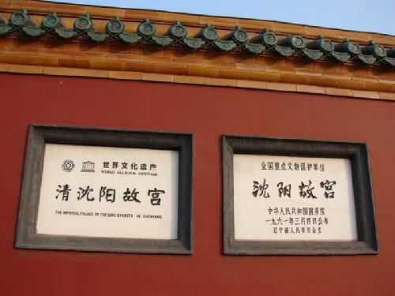

文物价值
沈阳故宫博物院不仅是以其多民族风格的宫苑建筑成为著名的旅游胜地，更以其丰富的院藏文物珍宝而享誉中外。
其中，尤以明清宫廷文物弥足珍贵，堪称国宝。院藏文物珍宝展是集故宫院藏服饰、珐琅器、书画、雕刻品、漆器、瓷器等门类藏品之精粹。
这些文物集中体现了中国劳动人民高超的工艺水准和清代宫廷的艺术风格，反映了中国明清时期生产工艺的水平。
具有重要的观赏价值和研究价值。展览采用世界先进陈形形式，充分运用现代设备和陈列手段，同时又保持皇宫的古朴风貌，使您仿佛步入艺术圣殿。

清代皇宫外国礼品展沈阳故宫收藏和陈列的明清历史文物、艺术珍品及工艺美术品中，有许多中西文化交流工艺品，如钟表、玻璃器可谓独具特
色。自十七世纪以来，西方一些国家把大量的钟表、玻璃器输往广州、由广东海关购置贡进皇宫，海外各国使者也竞相以本国精致的钟表、
玻璃器作为贵重礼品赠给大清王朝，用这些巧于构思，精心制作的钟表、玻璃器精美艺术品取悦于皇帝，不仅是帝后怡情赏玩之物，
也是宫殿里不可少的一种装饰品。这些技艺精湛的工艺品，充分显示了外国匠师们的创造智慧与艺术才能，
同时也是十七、十八世纪，中西方文化交流，贸易往来的历史见证。
据武斌院长介绍，盛京（沈阳）作为清朝迁都北京之后的陪都，本是清朝的“特区”，康熙、乾隆、嘉庆、道光4位皇帝东巡拜谒祖陵期间，
每次都要在盛京宫殿临政或驻跸。与此同时，清朝廷将大量皇家珍藏送贮沈阳故宫。其中，清朝皇帝的圣容、行乐图送贮凤凰楼；
玉牒送贮敬典阁；满文老档、汉文旧档、历朝实录、圣训送贮崇谟阁；皇帝御用武备、青铜器送贮飞龙阁。
鼎盛时期累积已达十几万件之多，使沈阳故宫与北京故宫、热河行宫（现承德避暑山庄）一起，成为举世瞩目的清代三大皇家宫廷文物收藏宝库。